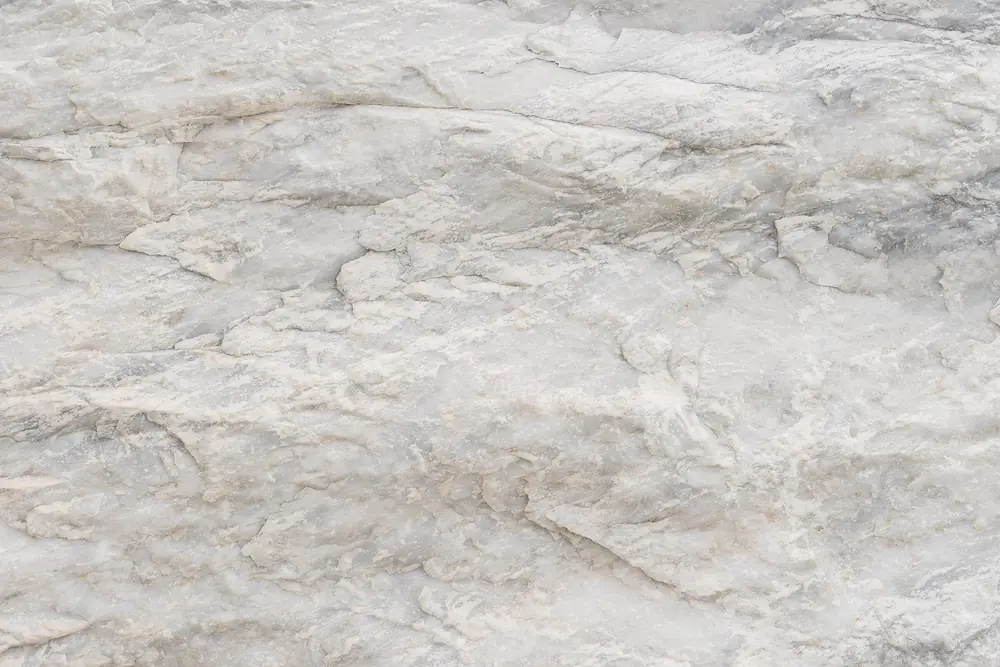

Cancer Evidence Explorer
Which exposures can cause which cancers, and how sure the evidence is for each link. From the IARC Monographs.
- Exposures
- 185
- Cancer types
- 68
- Links
- 469
In 10 languages
Free tools built from the IARC Monographs and published reviews by Wenxin Wan, a cancer epidemiologist.They describe whole populations, not what caused any one person’s illness.
Tobacco smoking and processed meat are both in Group 1: the evidence that each can cause cancer is equally sure. The risks are not.
100–120
Smokers
in 1,000 get lung cancer by age 75, about 10 to 12 in 100
4–5
Lifelong non-smokers
in 1,000 get lung cancer by age 75
18%
Processed meat
more risk of bowel cancer for each 50 grams eaten every day
European data. Quoted from the Cancer Evidence Explorer.
Seven ideas for reading a health headline →Free, and each in 10 languages.

Which exposures can cause which cancers, and how sure the evidence is for each link. From the IARC Monographs.
In 10 languages

Risk factors for heart disease, stroke, type 2 diabetes, dementia and more, graded by how strong the evidence is.
In 10 languages

The official recommendations for lowering your own cancer risk, coordinated by IARC (WHO) and its partners.
Read the recommendationsLearning by playing — three games.